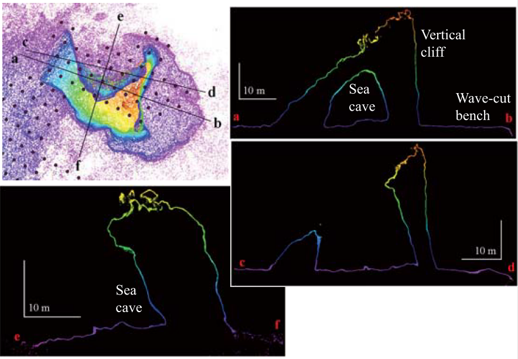

Top
UAV
1.1.1. UAS, SfM多視点写真測量
1.1.2.1 原理解説（LS）
1.1.2.2 原理解説（GNSS）
1.2.1. 事例紹介(SfM)
1.2.2. 事例紹介（TLS）
1.3. UAS機材・操作説明
CloudCompare
点群データとは？
LEVEL 0 インタフェース、表示、データの保存
LEVEL 1 基本操作
LEVEL 2 スカラー値の操作
LEVEL 3.1 レジストレーション
LEVEL 3.2 距離計算
SfM多視点ステレオ測量ーGIS学会2017Ver.
写真測量の基礎
基幹技術
写真測量のソース（写真画像）
ハードウェア
PhotoScan初期設定
Lens（レンズ歪み補正ソフトウェア）
Workflow: Align Photos
Workflow: Build Dense cloud, およびBuild Mesh
Workflow: Build Texture
Mask処理
複数Chunk処理
参考資料・適用事例集
SfM多視点ステレオ測量ーJGU2015秋の学校Ver.
SfMとは？
Photoscan
RTKLIBによる解析（JGU夏の学校2018Ver.）
計画
測量
解析
精度検証
Published with GitBook
1.2.1. 事例紹介(SfM)
事例紹介 SfM-MVS
陸繋島
Cross Section

Topographic Change
滝（栃木県）
海食崖
崩壊地（熊本県）
雪崩（新潟県）
杉（福島県）
鍾乳洞（岩手県）
海外での実施例
UAVの活用例
results matching "
"
No results matching "
"